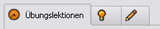
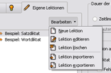
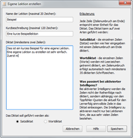

Programmstart | Inhaltsverzeichnis | Trainingsparameter
Programmstart | Inhaltsverzeichnis | Trainingsparameter 
6. Schreibtraining
6.1 Lektionen
Auf der linken Seite des Startfensters befindet sich die Lektionenauswahl. TIPP10 unterscheidet drei Arten von Lektionen, die über das Register (die "Tabs" mit dem Uhr-, Glühbirnen- und Stiftsymbol) ausgewählt werden können - Übungslektionen, Freie Lektionen und Eigene Lektionen.

Nachfolgend werden die einzelnen Register genauer erläutert:
6.1.1 Übungslektionen
Übungslektionen dienen dem schrittweisen Erlernen des Zehnfingersystems. Die erste Lektion lehrt die Schriftzeichen der Grundstellung, die darauf folgenden Lektionen beinhalten jeweils (meist zwei) neue Tasten, zusätzlich zu den Tasten der vorherigen Lektionen. Der Aufbau der Übungslektionen ist abgestimmt nach der Häufigkeit der Schriftzeichen im Sprachgebrauch. Sie lernen also zuerst die Schriftzeichen, die sie voraussichtlich am häufigsten tippen werden.
Sollten Sie bisher keine Erfahrung mit dem Zehnfingersystem haben, wird empfohlen, alle Lektionen nacheinander abzuarbeiten. Sie sollten dazu jede Lektionen so oft wiederholen, bis Sie nur noch wenige oder keine Fehler machen und einen unterbrechungsfreien Schreibfluss vorweisen können. Anschließend können Sie sich die nächste Lektion vornehmen.
6.1.2 Freie Lektionen
Freie Lektionen sind Diktate, die sich mit verschiedenen Themen befassen. Im Gegensatz zu den Übungslektionen richten sich die freien Lektionen nicht explizit nach bestimmten Schriftzeichen. Sie sind besonders geeignet für Benutzer, die das Zehnfingersystem bereits ausreichend beherrschen und sich nur in Punkto Fehlerquote und Schreibgeschwindigkeit verbessern wollen. Freie Lektionen versprechen in diesem Stadium mehr Unterhaltung als Übungslektionen, da zusammenhängende Texte diktiert werden.
Oberhalb der angezeigten Lektionen befindet sich ein Auswahlfeld Thema, mit dem sich die angezeigten Lektionen nach einzelnen Themen filtern lassen. Außerdem können Sie die Maus eine gewisse Zeit (ca. 1 Sekunde) über eine Lektion in der Liste bewegen, dann wird Ihnen eine Kurzbeschreibung der Lektion angezeigt.
6.1.3 Eigene Lektionen
Über das Register Eigene Lektionen können Sie selbst Diktate erstellen und diese trainieren. Nach der Installation von TIPP10 existieren zuerst zwei Beispieldiktate, die die Funktion der eigenen Lektionen veranschaulichen sollen. Sie können diese aber auch jederzeit, wie weiter unten beschrieben, entfernen.
Um einem Text als eigene Lektion zu erstellen oder vorhandene eigene Lektionen zu bearbeiten, klicken Sie auf den Button Bearbeiten rechts über der Lektionenliste. Beachten Sie, dass sich das Ändern oder Löschen einer vorhandenen Lektion immer auf die gerade ausgewählte Lektion in der Liste unter dem Menü bezieht.

Wenn Sie eine neue Lektion erstellen oder vorhandene Lektionen editieren, wird Ihnen eine Eingabemaske angezeigt.

Im ersten Eingabefeld können Sie der Lektion einen Titel geben. Dieser Titel wird später in der Lektionenliste und in der Lernstatistik angezeigt. Der Titel darf aus Formatierungsgründen maximal 20 Zeichen lang sein und kann nach dem ersten Speichern der Lektion nicht mehr geändert werden.
Geben Sie dann im zweiten Eingabefeld eine kurze Beschreibung der Lektion ein. Diese darf länger sein als der Titel (maximal 120 Zeichen) und wird angezeigt, wenn der Mauszeiger eine gewisse Zeit (ca. 1 Sekunde) über der jeweiligen Lektion in der Liste verharrt.
Im unteren Eingabefeld können Sie dann das eigentliche Diktat eingeben. Bitte geben Sie mindestens zwei Zeilen Text ein (damit das Diktat auch mit der Intelligenfunktion arbeiten kann - siehe weiter unten).
Zum Schluss müssen Sie noch festlegen, ob der eingegebene Text als Satz- oder Wortdiktat geführt werden soll.
Bei einem Satzdiktat werden die einzelnen Zeilen (Sätze), wie eingegeben, mit einem Zeilenumbruch am Ende diktiert. Der Benutzer sieht also das Schriftzeichen ¶ am Ende jeder diktierten Zeile und muss dann die Enter-Taste betätigen. Der wohl häufigste Fall für ein Satzdiktat: Sie möchten einfach nur einen Text vorgeben, der Ihnen dann, so wie vorgegeben, wieder diktiert wird.
Dagegen werden die einzelnen Zeilen bei einem Wortdiktat mit Leerzeichen getrennt diktiert. Ein Zeilenumbruch erfolgt automatisch nach mindestens 35 Schriftzeichen, das Umbruchzeichen ¶ wird also nach dieser Mindestzahl an Zeichen an die letzte Zeile (das Wort) angefügt. Ein Wortdiktat ist also eher dafür gedacht, eine Reihe bestimmter Worte und Schreibweisen aufzulisten.
Die Unterscheidung der Diktate in Wort- und Satzdiktate spielt auch für die Verwendung der Intelligenzfunktion eine Rolle, die Sie vor einem Training zusätzlich aktivieren können. Bei aktivierter Intelligenz werden die einzelnen Zeilen der Lektion nicht der Reihenfolge nach diktiert, sondern abhängig von den Tippfehler-Quoten die aktuell für den Lernerfolg sinnvollste Zeile in das Diktat einbezogen. Die Intelligenzfunktion liefert bei einem Wortdiktat bessere Resultate, als bei einem Satzdiktat. So können bei Wortdiktaten gezielt bestimmte Worte oder Wortkombinationen aufgelistet werden, die dann abhängig von den Tippfehler-Quoten diktiert werden.
Sätze sind normalerweise länger als Worte, deshalb kann ein Satzdiktat bei aktivierter Intelligenz nicht besonders häufig aktualisiert werden. Weiterhin besteht bei einem Satzdiktat auch keine so große Auswahl an Möglichkeiten, das Diktat intelligent zu erweitern. Wenn Sie die Intelligenzfunktion bei einem Satzdiktat nutzen möchten, wird empfohlen, möglichst viele und kurze Sätze zu verwenden.
Die Funktionsweise von Wortdiktaten mit aktivierter Intelligenz entspricht der Funktionsweise der Übungslektionen 1 bis 5, Satzdiktate mit Intelligenzfunktion arbeiten wie die Übungslektionen 6 bis 18.
Um Ihre eingegebene Lektion zu speichern, klicken Sie auf den Button Speichern. Am Anschluss wird der Text analysiert und in Ihrer Datenbank gespeichert. Der Titel Ihrer Lektion sollte nun in der Lektionenliste aufgeführt sein und Sie können die Lektion verwenden.
Wenn Sie eine eigene Lektion aus der Liste löschen möchten, selektieren Sie diese mit der Maus und wählen Sie dann im Bearbeiten-Menü den Eintrag Lektion löschen. Beachten Sie unbedingt, dass beim Löschen einer Lektion auch alle aufgezeichneten Daten, die mit der Lektion in Verbindung stehen, gelöscht werden (also z.B. absolvierte Lektionen in der Lernstatistik).
Sie können auch einzelne Lektionen exportieren und importieren. Dies ist sehr praktisch, wenn Sie Lektionen sichern oder mit anderen Benutzern tauschen möchten. Wählen Sie dazu im Bearbeiten-Menü den Eintrag Lektion importieren bzw. Lektion exportieren.
 Programmstart | Inhaltsverzeichnis | Trainingsparameter
Programmstart | Inhaltsverzeichnis | Trainingsparameter 
© 2006-2011 Tom Thielicke IT Solutions